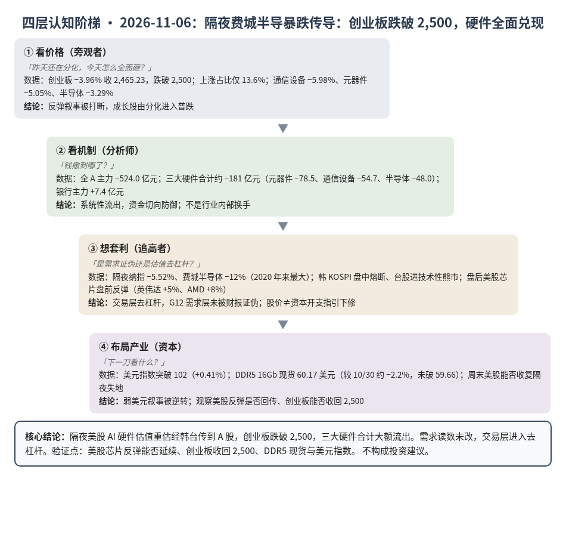
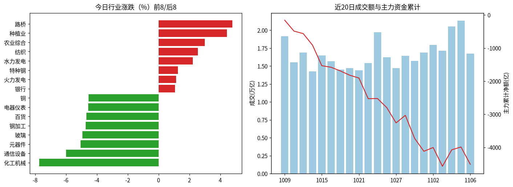
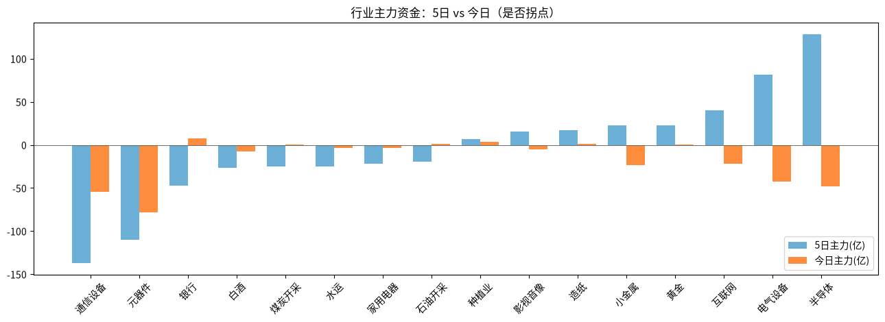

A股投研日报 · 2026-11-06（四层认知版）
- 主线
- 隔夜费城半导暴跌传导，创业板跌破 2,500，硬件全面兑现
- 最重要变化点
- 创业板 −3.96% 收 2,465.23 跌破 2,500；三大硬件主力合计约 −181 亿；全 A 主力 −524 亿
- 机制含义
- 美股 AI 硬件估值去杠杆经韩台开盘恐慌传到 A 股；需求读数未改，交易层从反弹切到系统性流出
- 下一个观察点
- 下周一创业板能否收回 2,500；美股芯片反弹（盘前英伟达/AMD 已反弹）能否收盘确认
本报告为基于公开数据的研究分析，不构成投资建议。
今日市场概况
数据管道速览（Tushare 收盘数据，规则生成，正文判断见下文）
- 指数：上证指数 -1.10% 收 3,649.18，创业板指 -3.96% 收 2,465.23；深证成指 -2.57%、科创50 -2.60%、上证50 -0.84%、沪深300 -1.44%、中证500 -2.13%、中证1000 -2.18%（Tushare）。
- 量能与宽度：成交 16,716 亿元（20 日均 16,562 亿元）；上涨 758 家 / 下跌 4,741 家，上涨占比 13.6%，个股中位数 -1.9%。
- 主力资金：全 A 主力 -524.0 亿元，连续第 1 日净流出。
- 行业：主力流入居前 银行（+7.4 亿）、水力发电（+7.1 亿）、路桥（+4.0 亿）；流出居前 元器件（-78.5 亿）、通信设备（-54.7 亿）、半导体（-48.0 亿）。
- 龙虎榜 / 北向：机构专用席位合计 -2.22 亿元；沪深股通成交前五 中际旭创、宁德时代、贵州茅台、新易盛、北方华创（成交额≠净买入）。
变化点
方法：四层认知阶梯 + 历史周期律。数据 Tushare（见附录）。不构成投资建议。
一、世界观定位
阶段不变，回退条件不变。楚汉层无新的制度开关。世界指标今日更新因 Tushare IP 超限中止，五盏灯沿用 11/04 读数（3 黄 2 红：估值、中国信用）。AI/半导体周期灯仍黄——需求强但融资/价格背离。
二、变化一（主变化）：隔夜费城半导 −12% 传导，创业板跌破 2,500
- 看价格：创业板 −3.96% 收 2,465.23，明确跌破 2,500；上证 −1.10% 收 3,649.18；科创50 −2.60%。通信设备 −5.98%、元器件 −5.05%、半导体 −3.29%。成交 16,716 亿元（缩量约 4,635 亿），上涨占比仅 13.6%。
- 看机制：隔夜纳指 −5.52%、费城半导体 −12%（2020 年来最大），AMD −17%、美光 −18%、台积电 −11%（源）。韩 KOSPI 盘中熔断、SK 海力士一度 −13%（源）；台股较 10 月高点回撤逾 20% 进技术性熊市（源）。A 股全 A 主力 −524.0 亿元，三大硬件合计约 −181 亿元，银行 +7.4 亿元——系统性流出而非内部分化。
- 想套利：盘后美股芯片盘前反弹（英伟达涨超 5%、AMD 涨超 8%，源），推断周一开盘或有情绪修复窗口，但隔夜若未能收盘确认，则反弹叙事仍死。
- 布局产业：云端需求层（G12）没有被今天的股价证伪——证伪条件仍是云厂商 2027 资本开支指引持平或下降；被否定的是"创业板守住 2,500 + 硬件分化即反弹未死"的交易假设。
判断：主要矛盾从"仓位拥挤后谁先兑现"升级为"估值去杠杆是否闭环"。创业板失守 2,500 + 三大硬件合计大额流出，反弹叙事转震荡/寻底。
三、变化二：美元指数破 102，弱美元叙事逆转
美元指数突破 102，日内 +0.41%（源），彻底否决"本周跌破 101"。CME 显示美联储 12 月加息 25bp 概率约 69.6%（源）；高盛将金价 2026 年底目标由 4,650 下调至 4,150 美元（源）。A 股黄金 −1.15%，主力仅 +0.08 亿元。
判断：弱美元尾风熄火，成长股估值多了一层逆风；贵金属交易逻辑从"美元下行"切回"央行购金是否托底"。
四、上一交易日验证点回顾（11/5 → 11/6）
| 验证点 | 结果 |
|---|---|
| 创业板守住 2,500 | 未命中：−3.96% 收 2,465.23 |
| 三大硬件主力合计 > 0 | 未命中：合计约 −181 亿元 |
| DDR5 16Gb 较 10/30 跌超 3%（< 59.66 美元） | 未命中：今日现货 60.17 美元（约 −2.2%） |
| 本周美元指数跌破 101 | 未命中：反而突破 102 |
五、供应链风险敞口（人工复核版）
脚本版见 risk_section_20261106.md。口径为 GB300/NVL72 当量柜年化系统价值；Δ$ 为事件类型假设模板，仅用于排序，非预测。脚本 6 条，误匹配 6 条（扩产/研报/股价/涨价/小震）。复核后有效断供 Δ$≈0，基线维持年化 EL 57.7 亿美元（10/21）。采集降级：GDELT 限流，巨潮公告匹配未恢复；世界指标更新因 IP 超限中止。
六、机会表（产业/环节层面，不构成投资建议）
| 环节 | 逻辑 | 证伪条件 |
|---|---|---|
| 银行（防御） | 今日少数主力净流入，避险切仓 | 创业板强势收回且银行转流出 |
| 半导体（观察反弹） | 5 日主力仍 +128 亿，盘后美股芯片盘前反弹 | 下周一美股芯片收盘续跌且半导体主力再大额流出 |
| 贵金属 | 央行购金叙事仍在，但弱美元叙事已逆 | 美元指数站稳 102 上方并延续 |
中长期展望（3–12 个月与 2027）
3–12 个月：估值灯仍红，AI 硬件进入"估值去杠杆"段；G12 需求读数仍靠财报/指引，股价暴跌本身不改总账，但融资条件与风险偏好会压制弹性。
2027：P023（四大云 2027 资本开支合计 ≥ 8,500 亿，概率 0.55）仍是总闸门；G02 持平。今天的抛售若演变为云厂商下修指引，才会挑战 G12。
什么会改变展望：①任一大云厂商下修 2027 资本开支；②DDR5 现货单周跌超 3%；③费城半导周线未能收复本周失地的一半。
七、明日/本周验证点（可证伪）
- 下周一（11/9）创业板能否收回 2,500；否则反弹叙事确认转震荡。
- 周末美股芯片能否收盘确认盘前反弹（英伟达/AMD）；若再大跌则 A 股硬件压力延续。
- 本周美元指数是否守在 102 上方。
- DDR5 16Gb 现货是否跌破 59.66 美元（较 10/30 −3%）。

一句话总结：隔夜费城半导暴跌传导，创业板跌破 2,500，硬件全面兑现转防守。
本报告为基于公开数据的研究分析，不构成任何投资建议。
附录：市场数据（证据底稿）


| 收盘 | 今日% | 5日% | 20日% | MA20 | 成交(亿) | |
|---|---|---|---|---|---|---|
| 上证指数 | 3,649.18 | -1.10 | 1.39 | -4.32 | 3,693.30 | 7,726.35 |
| 深证成指 | 11,175.78 | -2.57 | 3.16 | -11.60 | 11,545.91 | 4,649.76 |
| 创业板指 | 2,465.23 | -3.96 | 2.14 | -19.00 | 2,648.26 | 1,951.35 |
| 科创50 | 1,253.20 | -2.60 | 7.96 | -14.00 | 1,300.59 | 896.27 |
| 上证50 | 2,787.41 | -0.84 | 1.65 | -0.71 | 2,770.93 | 1,395.10 |
| 沪深300 | 4,054.28 | -1.44 | 1.73 | -6.09 | 4,112.86 | 4,788.40 |
| 中证500 | 6,597.35 | -2.13 | 5.28 | -9.01 | 6,697.25 | 2,913.91 |
| 中证1000 | 6,505.35 | -2.18 | 5.59 | -9.09 | 6,613.13 | 3,356.91 |
行业资金热力（按5日主力净额排序，前8/后8）
| industry | 今日% | 5日% | 20日% | 今日主力(亿) | 5日主力(亿) | 资金连续天数 |
|---|---|---|---|---|---|---|
| 半导体 | -3.3 | 7.7 | -6.6 | -48.0 | 128.4 | -1.0 |
| 电气设备 | -2.0 | 11.5 | -3.6 | -42.3 | 81.2 | -1.0 |
| 互联网 | -2.4 | 13.6 | 11.2 | -22.0 | 40.1 | -1.0 |
| 黄金 | -1.1 | 12.8 | -1.9 | 0.1 | 23.1 | 4.0 |
| 小金属 | -3.3 | 8.1 | -13.7 | -23.0 | 22.5 | -1.0 |
| 造纸 | -1.8 | 6.5 | -3.0 | 1.4 | 16.8 | 5.0 |
| 影视音像 | 0.4 | 22.2 | 29.7 | -5.0 | 15.5 | -1.0 |
| 种植业 | 4.4 | 12.9 | -9.7 | 3.7 | 6.5 | 1.0 |
| 通信设备 | -6.0 | -7.5 | -32.5 | -54.7 | -136.9 | -2.0 |
| 元器件 | -5.1 | -0.8 | -22.5 | -78.5 | -109.8 | -2.0 |
| 银行 | 1.1 | -1.7 | 2.7 | 7.4 | -47.6 | 2.0 |
| 白酒 | -1.2 | 4.2 | 14.6 | -7.7 | -26.3 | -3.0 |
| 煤炭开采 | 0.1 | -6.6 | -10.5 | 0.8 | -24.9 | 1.0 |
| 水运 | -2.9 | -5.2 | -14.7 | -3.5 | -24.6 | -6.0 |
| 家用电器 | 0.7 | 7.7 | 12.6 | -3.2 | -22.1 | -5.0 |
| 石油开采 | 0.6 | -7.8 | -1.3 | 1.1 | -19.6 | 1.0 |
市场情绪时间序列（近10日）
| trade_date | 成交(亿) | 上涨占比% | 主力净额(亿) | 个股中位涨跌% |
|---|---|---|---|---|
| 20261026 | 16230.9 | 40.4 | -274.6 | -0.5 |
| 20261027 | 14729.0 | 10.9 | -462.7 | -3.0 |
| 20261028 | 16421.0 | 74.6 | 229.2 | 1.3 |
| 20261029 | 15707.1 | 14.0 | -694.9 | -2.6 |
| 20261030 | 16877.1 | 16.0 | -391.8 | -3.1 |
| 20261102 | 17951.9 | 84.0 | 114.9 | 2.0 |
| 20261103 | 17150.9 | 37.8 | -568.2 | -0.7 |
| 20261104 | 20518.9 | 83.8 | 497.2 | 1.9 |
| 20261105 | 21351.0 | 87.4 | 86.9 | 2.0 |
| 20261106 | 16716.0 | 13.6 | -524.0 | -1.9 |
今日上涨758家/下跌4741家，涨幅≥9.8% 43家、跌幅≤-9.8% 25家¹。
龙虎榜侧写：机构专用席位合计 -2.22 亿；净买入居前 盛达资源(+1.42亿)、新亚制程(+0.99亿)、上海电影(+0.70亿)，净卖出居前 皇台酒业(-1.09亿)、慈文传媒(-1.07亿)、闽发铝业(-0.60亿)。 沪深股通活跃股：成交前五为中际旭创、宁德时代、贵州茅台、新易盛、北方华创（成交额≠净买入）。
注：¹涨跌停为按±9.8%阈值近似（limit_list_d无权限）。²行业为Tushare stock_basic分类自行聚合（sw_daily/ths_daily/行业资金流接口无权限），成交加权、剔除N/C新股，成分≥8只。³主力=大单+特大单净额（moneyflow）。⁴2024年8月起北向每日净买入停止披露，moneyflow_hsgt/hsgt_top10数值为成交口径，不可解读为净流入。⁵新闻/公告接口无权限，改用新浪财经7x24公开快讯自动抓取+人工补充。
接口状态：trade_cal:OK；stock_basic:OK；index_daily:OK；moneyflow_hsgt:OK；hsgt_top10:OK；top_list:OK；top_inst:OK；index_dailybasic:OK；新浪7x24(公开):OK 3398条（11-05 14:10 起）